Today, and whatever didn’t fit yesterday.
Timo is a calm day planner for iPhone. Plan things with or without a time, sort them into the parts of your life, and let anything unfinished follow you to today.
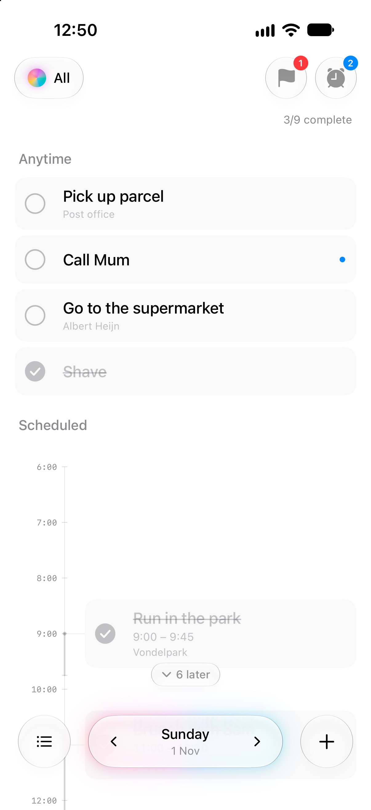
Carry over
Unfinished things follow you to today.
An Anytime item you didn’t get to moves forward by itself. The day it was planned for keeps a quiet “Carried to today” line, so looking back still tells the truth, and the item itself remembers where it came from. Nothing has to run at midnight: where an item shows up is worked out from its day and whether it’s done.
- An item’s planned day never changes on its own.
- Give something a time and it stays put, unless you ask it to move.
- Tick it off while looking at a past day and it’s done on that day.
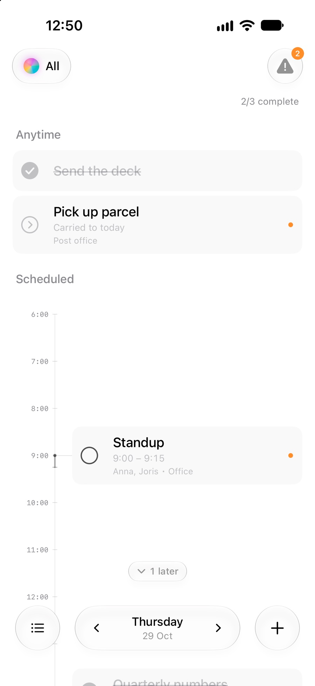
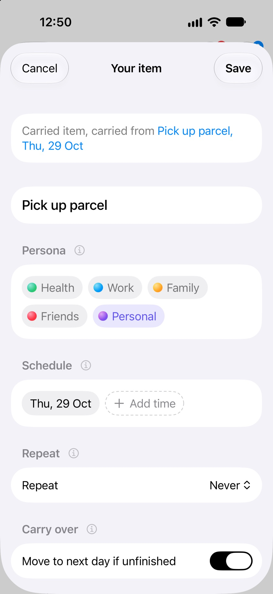
Personas
Five parts of a life, each with its own colour.
Health, Work, Family, Friends and Personal each have a gradient orb. Pick one from the glass capsule in the corner and the day view gives way to everything in it, grouped by day with a running “x/y complete”. An item can belong to several personas, or to none.
- The capsule’s glass takes on the persona’s colour.
- All blends every colour into one orb and shows the whole day.
- The menu grows out of the capsule and folds back into it.
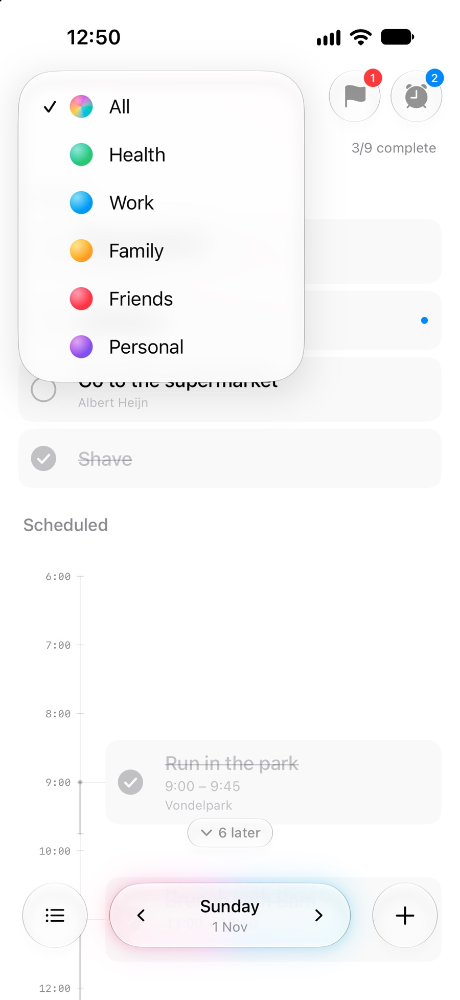
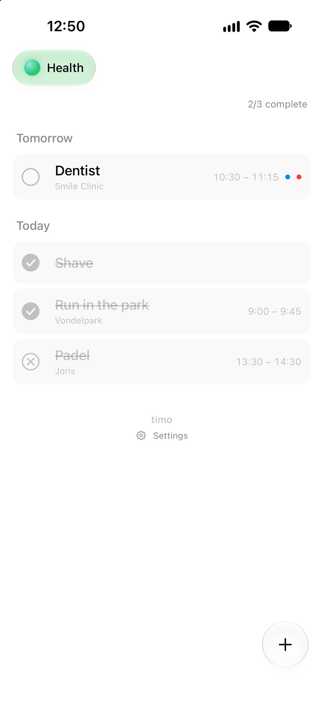
The editor
Every detail is a pill, set in a tap.
The schedule fits on one line: the day, a start time and an end. Reminders are blue, persona chips take their colour, and places and people are pills you type straight into. Anything not yet set is a dashed outline, so an empty field never passes for a filled one.
- Pickers open just below their pill and never cover the form.
- Save keeps whatever you were still typing.
- A small (i) beside each section explains it when you want to know.
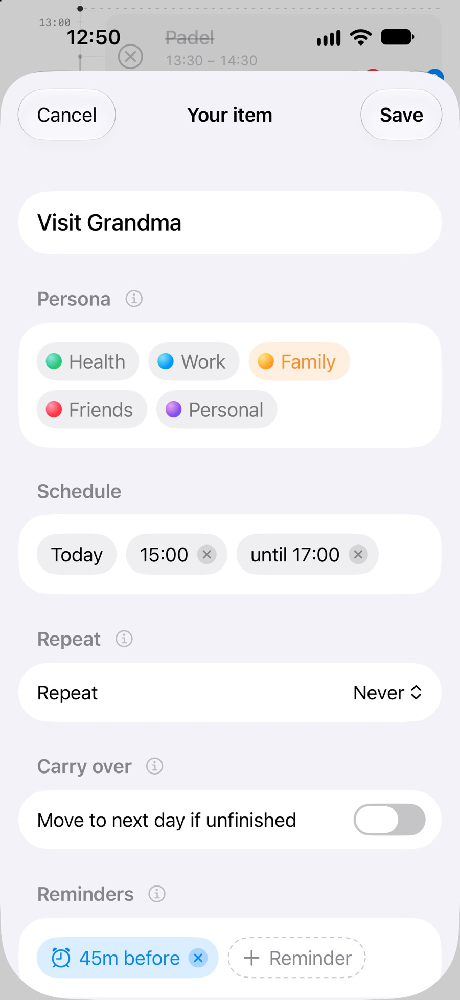
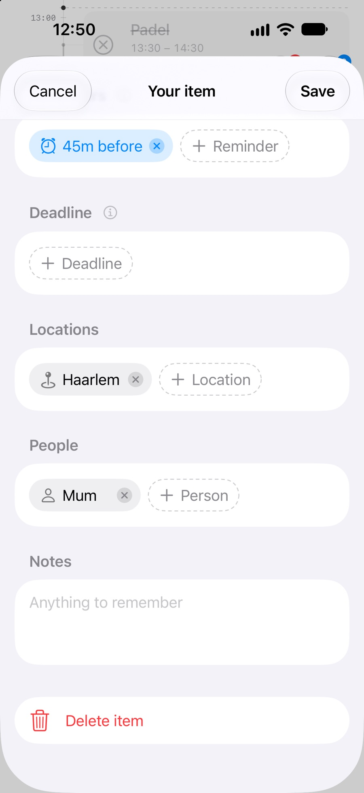
Repeat
Repeat it every weekday. Change just one day.
Choose every day, every weekday, every week or your own days. Each day gets a linked item you can tick off, cancel or move without touching the rest. Edit one, and Timo asks whether to unlink it or change the original instead.
- Delete this one, this and the following ones, or all of them.
- Times, people, places and reminders come along on every day.
- Holds up across daylight-saving changes.
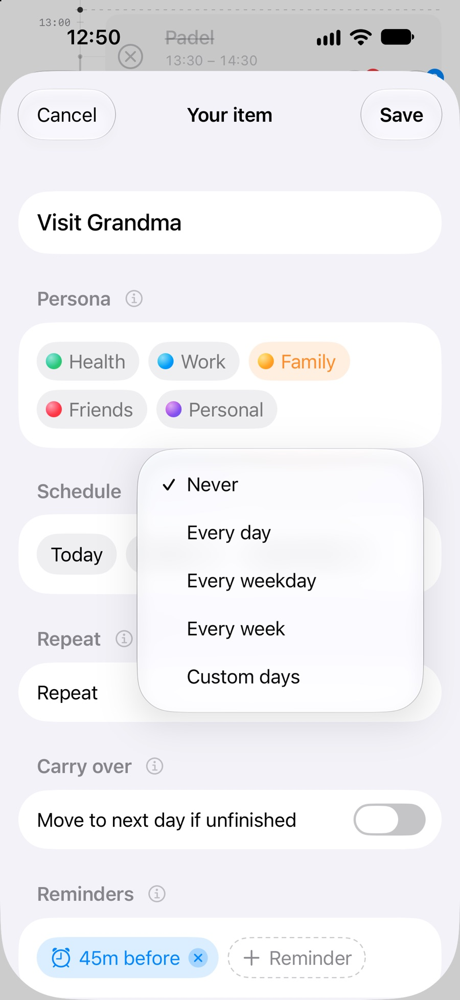
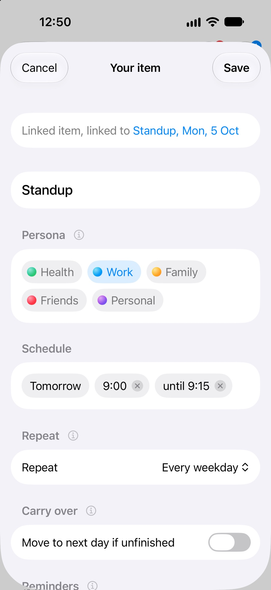
Cancel and undo
Called off is not the same as deleted.
Touch and hold an item and it lifts with its history underneath. Cancel keeps it in place, struck through, so you remember it was called off. Delete takes it away, and a glass Undo capsule waits above the dock for a few seconds.
- Cancelled and completed are separate states.
- Hold a cancelled item again to uncancel it.
- Every deletion can be undone, repeating items included.
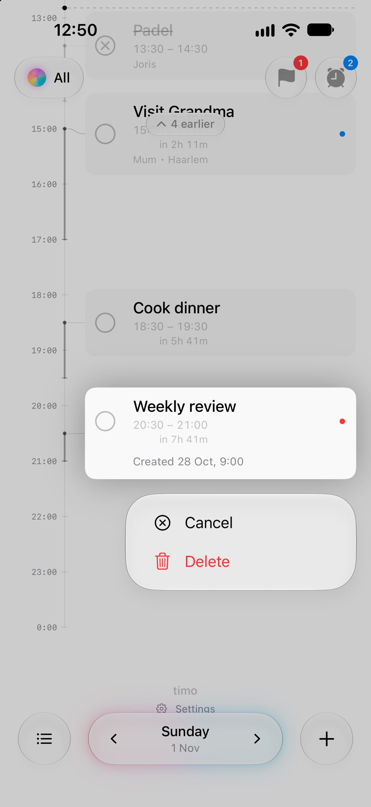
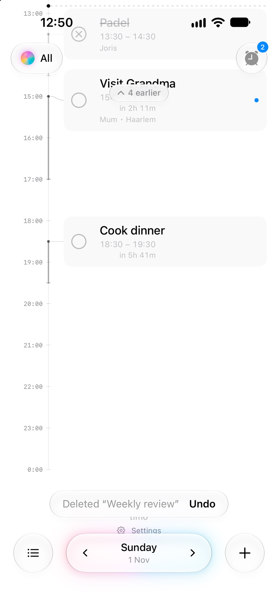
Time view
See the day as time, not just as a list.
The button at the bottom left turns the day into a timeline. Items sit at their hours, a line marks now, and anything running or coming up says how long is left. Cancelled plans stay visible and quiet.
- Buttons at the top gather deadlines and reminders, with a count.
- Small dots mark a reminder, a deadline or something to review.
- Content scrolls edge to edge behind the glass controls.
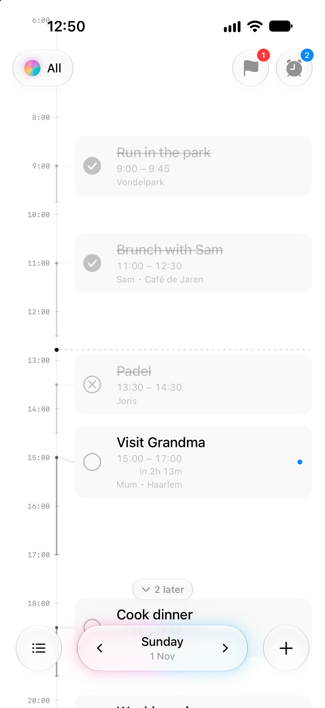
The date
You can always tell when it’s today.
The glass date control at the bottom shows the weekday above the date. On today, a soft cyan, blue, violet and pink light sits behind the glass. It fades in and then holds still; step to another day and it fades away.
- The arrows step a day at a time; swiping works too.
- Tap the date to open a calendar.
- While you look at today, the view follows it past midnight.
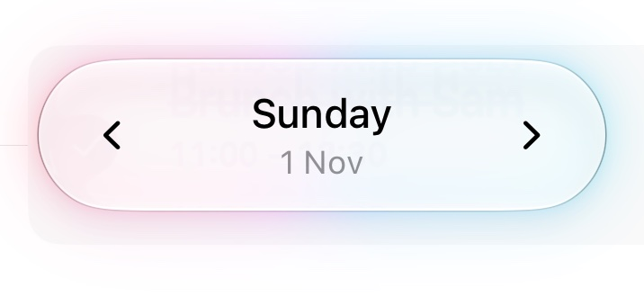
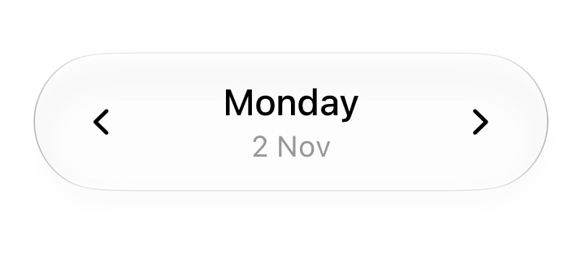
Quiet in every other way.
Stays on your iPhone
No account, no tracking, no network requests. Your plan is a small file on the device. Optional iCloud sync keeps it in your own private iCloud database.
Reminders that keep up
Local notifications follow your edits: move an item and its reminders move with it; tick it off or cancel it and they go quiet.
Made for everyone
VoiceOver labels on every control, Dynamic Type from the smallest size to the largest, and calmer motion when Reduce Motion is on.